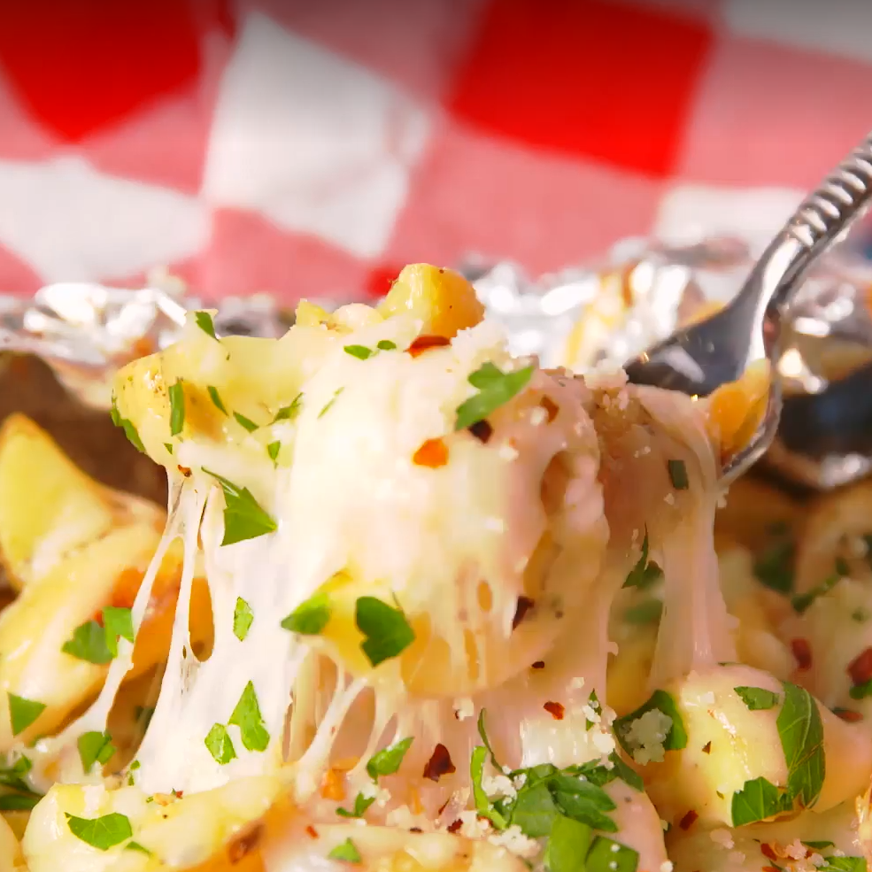

Ingredients
- Two ounces of Gold Potatoes, quartered
- Two tablespoons of extra-virgin Olive oil
- One teaspoon of garlic powder
- One teaspoon of dried oregano
- One teaspoon of Salt
- Two tablespoons of Freshly ground black pepper
- Two cups of Shredded Mozzarella cheese
- One cup of freshly grated Parmesan cheese
- One teaspoon of fresh parsley for garnish
- One teaspoon of red pepper flakes for garnish too
Direction
- Gather all ingredients. Preheat oven to 450°F (230°C).
- Prepare food-grade aluminium foil about 10" long, about four pieces are enough
- In a large bowl, toss those potatoes with olive oil, garlic powder, and oregano then season them with salt and pepper, the black ones, no racist intended
- Divide the potatoes
and conquer them, fold the foil crosswise to completely cover the potatoes then roll the top and bottom edge to seal them closed
- Place the foil packets on the grill or in oven for about 15 minutes
- Unwrap those packets then sprinkle Parmesan and Spread MORE MOZZAS on top of it! then foil them back.
- Cook them until those cheese are melty or about 3 to 5 minutes
- They are ready to go, AFTER you top them with parsley and pepper,
the asian ones the red ones
- Enjoy! and sorry for my bad jokes, and FYI, I'm Asian